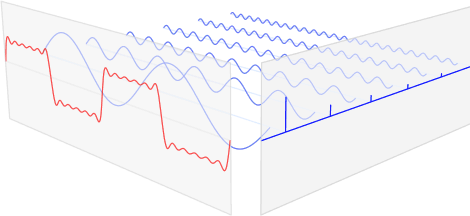
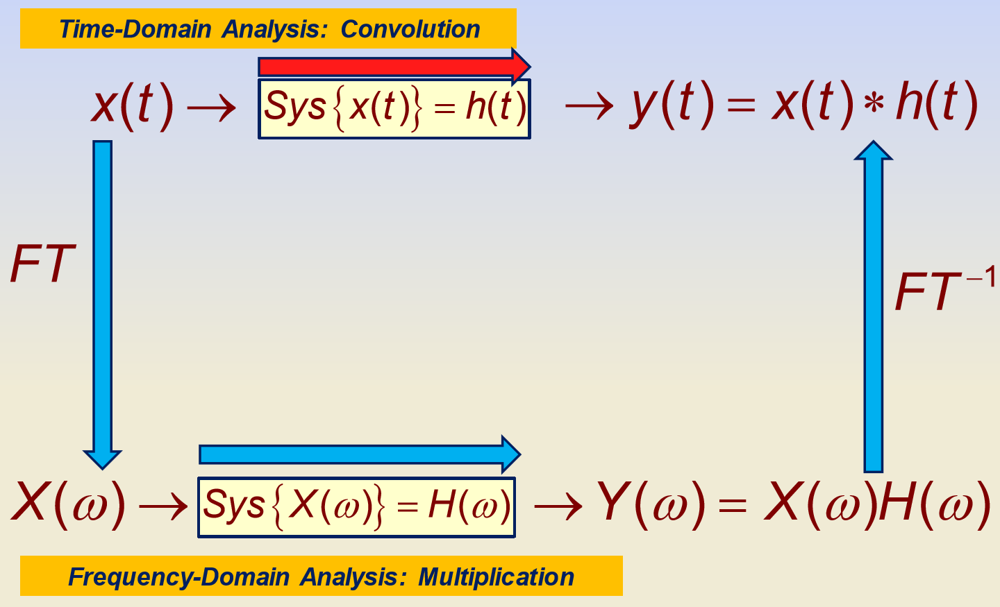
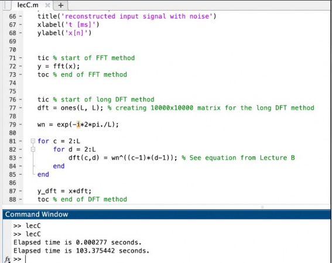

Fourier Transform. Source: https://www.ritchievink.com/img/post-5-fft/fig_2.png
"Every system is a filter" ~ Mike Potter. These famous words by my professor and turned out to be very true. From the headphones you wear to the screen you’re reading this on had some sort of filter imbedded within.
Even though ENEL 327 focuses on theoretical concepts, it is still very important because it taught
me how signals can be sampled and transformed by a filter and recreated at the other end.
• Learning how to turn a continuous signal into a discrete signal and applying various transforms to that signal.
• The teaching project at the end of the course taught me a lot about what goes into teaching a technical subject,
it is not as easy as some teachers make it seem.

Convolution property of Fourier transform. Source: ENEL 327 Signals and Transforms - Mike Potter, 2019
The topic for my research project was the Fast Fourier Transform (FFT).
The FFT is an algorithm that a system can use to take a discrete Fourier transform of a given input without requiring a ton of storage or computing power.
When running simulations on MATLAB like the one below it can be seen that the regular discrete Fourier transform takes 103 seconds compared to the FFT taking less than one mili second to complete the same transform.
The accuracy lost when doing an FFT is very minimal, so the trade off of some accuracy and saving
a LOT of time is very much worth it.

Fast Fourier comparison. Source: Group 3FFT, ENEL 327